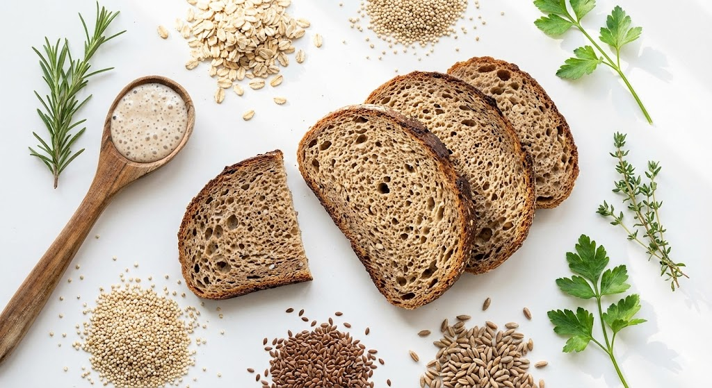

Brot & Gesundheit: Die Biochemie
Ist Brot ungesund? Nein, nur schnelles Brot. Zeit ist die wichtigste Zutat für die Bekömmlichkeit. Wir betrachten Fermentation als "Vorverdauung" durch Mikroorganismen.
1. FODMAPs & ATIs: Der Blähbauch
Viele Menschen glauben, sie vertragen kein Gluten. Oft sind aber andere Stoffe schuld.
Die 4-Stunden-Regel
- FODMAPs: Zuckerarten, die im Dünndarm nicht resorbiert werden und im Dickdarm gären (Blähungen). Hefe und Bakterien fressen diese Zucker auf – aber sie brauchen Zeit. Nach 4 Stunden Gehzeit sind 90% der FODMAPs abgebaut.
- ATIs (Amylase-Trypsin-Inhibitoren): Insektenabwehrstoffe des Weizens, die Entzündungen fördern können. Auch sie werden durch lange Fermentation reduziert.
Fazit: Ein Industriebrot (1h Gehzeit) ist schwer verdaulich. Ein Handwerksbrot (24h Führung) ist bekömmlich.
2. Phytinsäure: Der Mineralräuber
Vollkorn gilt als gesund. Aber die Schale enthält Phytinsäure. Diese Säure bindet Mineralstoffe wie Eisen, Zink und Calcium fest an sich. Der Körper kann sie nicht aufnehmen (Chelat-Bildung).
Die Lösung: Sauerteig. Die Milchsäurebakterien aktivieren das Enzym Phytase. Dieses Enzym knackt die Phytinsäure und gibt die Mineralstoffe frei. Vollkorn ohne Sauerteig ist ernährungsphysiologisch fast wertlos.
3. Acrylamid: Die Gefahr der Hitze
Vergolden, nicht verkohlen
Bei Temperaturen über 170°C reagiert die Aminosäure Asparagin mit Zucker zu Acrylamid (potenziell krebserregend).
Roggen enthält mehr Asparagin als Weizen. Dunkle Roggenkrusten sind daher riskanter.
Tipp: Brot nicht zu dunkel backen ("Goldgelb") oder Dampf nutzen, um die Oberflächentemperatur anfangs zu senken.